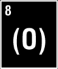

P E R I O D I C . T A B L E . O F . E L E M E N T S |
|
|
 ELEMENT: oxygen SYMBOL: (O) ATOMIC NUMBER: 8 ATOMIC WEIGHT: 15.9994 | |
|
TITLE: "trace elements 4" ARTISTS: various STYLE: experimental techno RELEASE DATE: august 1998 STATUS: 600 copies (still available) | |||
|
TRACK LISTING: |
|||
| A |
A1: "depth cue" by ARCHETYPE (charles noel)133 bpm A2: "minus" by VALENCE (kevin ginger)133 bpm A3: "the void track" by WATERTOWER (anthony soon) lock 1 - "verse 1" by PARIS MACK lock2 - "jupiter" by DAVE COOPER etching: "cellular reactions: divide and conquer" |
||
| B |
B1: "swivel" by MIDI SLUT (mike poe) B2: "direct descendant (three)" by .PLACEBO. (kevin krahel)133 bpm lock 1 - "chew trax" by KELLY WARNER lock 2 - "1.8" (for john cage)" by FIRST SEQUENCE (eluna) lock 3 - "quake mod" by NOT CHAD (chad prye) etching: "stay tuned..." |
||
|
return to t a b l e | |||